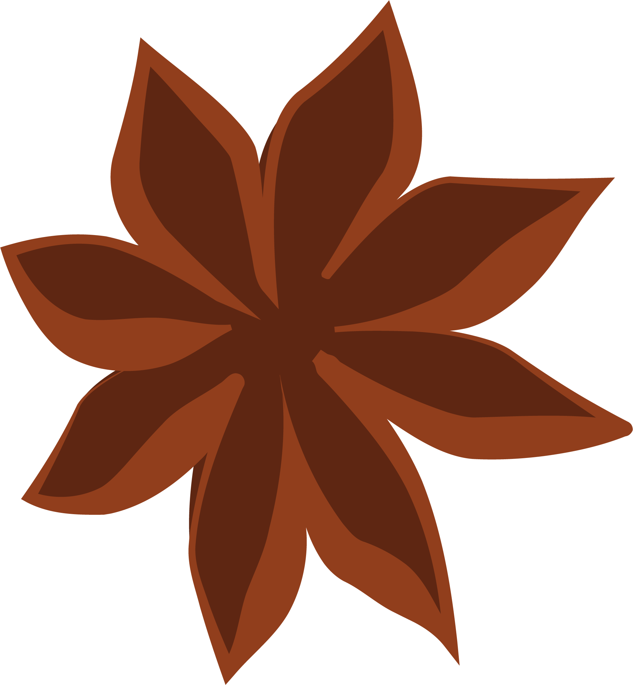

Fräschast i Almedalen sedan 2012
Äntligen kan vi ses i Almedalen, och allas vår favoritdrink är här för
att hålla dig sällskap!
Årets upplaga introducerar en härlig friskhet från citrus i form av
apelsin, lime och mandarin, samtidigt som den spelar på dess sötma.
Tillsammans med smaken från stjärnanis, kardemumma och kryddpeppar
finner drinken sin komplexitet och sitt djup. Servera drinken med en
limeklyfta och du har den ultimata Almedalsdrinksupplevelsen för 2023!
Fira in sommaren med oss, och blanda din egen Almedalsdrink! Receptet
hittar du högre upp. Dela gärna din Almedalsdrink under
#Almedalsdrinken på Instagram. I år kan du följa oss på Instagram, där
vi går under namnet @Almedalsdrinken
Hjälp till att sprida Almedalsdrinken! Tipsa barpersonal, mingelfixare
och kollegor om drinken.
Vill du ha med Almedalsdrinken på ditt event i Almedalen?
Fyll i det här formuläret så
kontaktar vi dig!
Vi ses i Almedalen!

Om drinken
Årets Almedalsdrink sticker ut i en uppsjö av smaksatta drycker på
burk. Almedalsdrinken är och ska vara en arbetad drink som kan
avnjutas i ett fint glas med is och garnering.
I år har vi även valt att servera den i burk för varma dagar och sena
nätter.
Årets smak är en alkoholfri mandarin- och stjärnanislikör som vi
blandar med fin fläderdryck. Fruktig, sötsyrliga med spännande
kryddsmak.
Hallå där
Örjan Åstrand är bartendern som har komponerat Almedalsdrinken.
Till vardags jobbar han på anrika Tennstopet i Stockholm och föreläser
ofta om hur man tjänar på att ha ett bra utbud av alkoholfritt.
- Det alkoholfria utbudet ökar stadigt och företagare tjänar på ett
bra utbud på krogen.
För Örjan är det en konst att blanda drinkar och för honom är
alkoholfritt inget alternativ.
- En drink är en drink, oavsett om den innehåller alkohol eller ej.
Drink är fest! Och ”alkoholfritt alternativ” känns mer och mer
föråldrat. Idag beställer många drycker via dess riktiga namn fast
utan alkohol.
Örjan har skrivit böckerna "Drinkar för gravida" och "Alkoholfria
cocktails" samt är nu aktuell med komponeringen av Almedalsdrinken
2023.